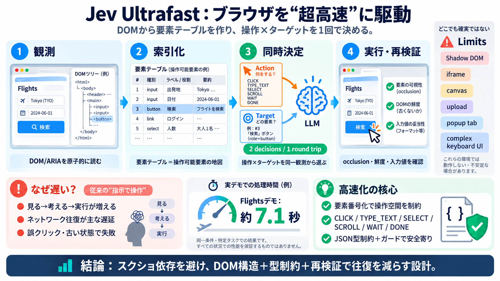

Web Bench: Compare AI Browser Agents (Updated June 2026)
On the other hand, agent performance for read heavy tasks (e.g. extracting information out of websites) was better than …

観測（DOM）→索引化（要素テーブル）→操作（クリック/入力/選択）を高速に決定
基本はスクリーンショット非依存（DOM原子的読み取り＋ガード）
DOMから要素を読み取り
操作だけ/ターゲットだけだと往復増
誤クリック・古い状態で失敗
観測するたびに要素表（indexed action space）を作る
操作（CLICK/TYPE_TEXT/SELECT/SCROLL…）と要素型を整合させる
同じ観測状態（DOMから得た要素表）
意思決定ヘッドを分ける往復（ターゲット選定だけで1回、操作選定で1回…）
DOM/ARIA等から要素表を生成
操作とターゲットを同時に選ぶ
文書状態/入力値/近傍文脈/occlusionを再検証
サイト固有スクリプトや事前入力文字列に依存しない
同一モデル・同一設定・特定タスク反復での結果（一般化保証ではない）
TYPE_TEXT時のみ（他操作では不要にしない）
小さなJSONを前提に「型が合う入力」だけが実行される
ボタン等をクリック
入力欄へ書き込み
コンボ/選択肢・スクロール
視覚認識の曖昧さ（レイアウト変化・解像度差など）
要素の種類・値・テキストを直接扱い、同一状態で整合させる
DONE＝推定で、外部的な成功条件が未確認
DONE後も別の検証で結果を確認する方針
Shadow DOM / iframe
canvas / complex UI
upload / keyboard widgets
存在しないターゲット、誤クリック、状態不整合で失敗しやすい
要素番号化＋操作種別整合＋再検証（occlusion/鮮度/文脈）
利用者が「どのサイトでも同等に速い」と誤解する可能性
“ガードとDOM解釈の範囲内で性能が出る”性格を前提に運用する
操作×ターゲットを同じ観測から決める
JSON型制約＋occlusion/鮮度の再検証
未対応領域が明確／測定は条件付き
本デッキは、ユーザー提供の要約テキスト（jev-ultrafast README本文と掲載情報に基づく）を圧縮して構成しています。
On the other hand, agent performance for read heavy tasks (e.g. extracting information out of websites) was better than …
| Model / Agent stack | Success rate (overall) | Median duration (s) | Notes | --- --- | | ModelA + FrameworkX | 82% |…
That’s the bet. Code-mode framing, CDP under the hood, scan-then-script flow, no MCP layer in between. ## The honest ve…
CLI-first design - Every browser action is a single CLI command. Chain them together in any language or framework Acces…
You can safely connect your credit card and purchase things with hosted browser agents.### How we Made Scalable Long-Hor…